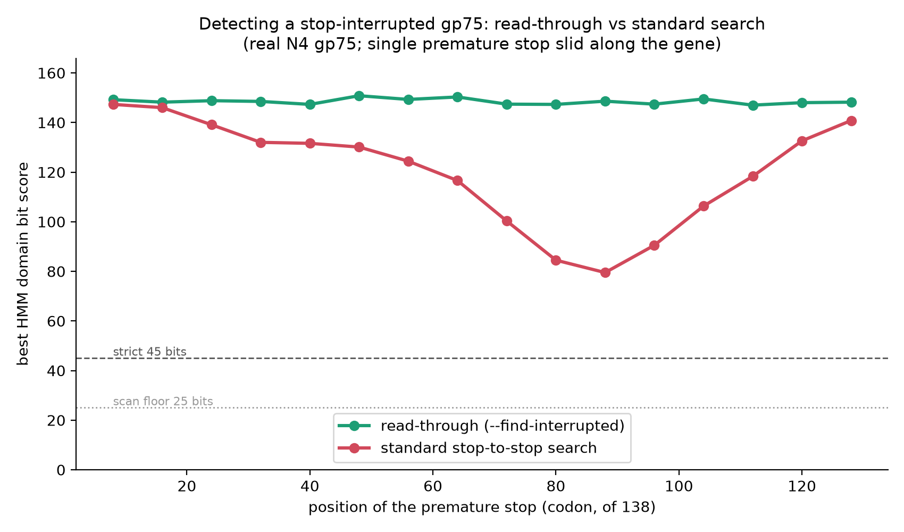
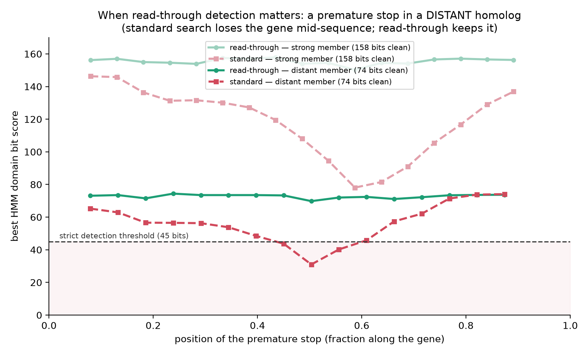

What it does
--fasta at any protein family's seed FASTA.
The bundled example is a phage protein, but nothing is hard-wired to it.run_manifest.json + METHODS.md.Install (one-time)
setup.sh creates the
hmm-discovery environment with every tool. No Docker. Runs on Linux, macOS, and
Windows (inside WSL2 — the bioinformatics tools have no native Windows builds).
macOS / Linux / WSL2
bash setup.sh # creates the hmm-discovery env, installs all tools, verifiesosx-arm64
conda build. setup.sh auto-sets CONDA_SUBDIR=osx-64 so the env builds for
x86-64 under Rosetta 2 (install once with
softwareupdate --install-rosetta --agree-to-license). Override by exporting
CONDA_SUBDIR yourself first.wsl --install -d Ubuntu in an
Administrator PowerShell, then reboot), open Ubuntu, and run bash setup.sh. Or
double-click run.bat, which launches the tool inside WSL2 for you.Quick start
Easiest — guided wizard
bash start.shscripts/Run HMM Homologue Finder.command in Finder.
Interactive — drag your FASTA in
bash run.sh
# seed FASTA > (drag your .fasta into the terminal, press Enter)run.sh activates the environment, verifies the software, then prompts for your seed.
Explicit — fully unattended
conda activate hmm-discovery
python3 scripts/hmm_finder.py --fasta my_seeds.faa --name my_protein --cpu 8--fasta. With no TTY (cron/nohup/pipe) it never
prompts — it uses the full default database set and runs to completion.
python3 scripts/hmm_finder.py --fasta my_seeds.faa --smoke --name my_proteinSingle-genome scan — "does this genome carry my gene?"
# build the HMM from seeds and scan a local genome:
python3 scripts/scan_genome.py --seeds gene_seeds.faa --genome my_genome.fna --out scan_out
# fetch the genome from NCBI by accession instead of a local file (needs --email):
python3 scripts/scan_genome.py --hmm gene.hmm --accession KX098390 --email you@inst.edu --find-interrupted--genome FASTA or an --accession fetched from NCBI
nucleotide (comma-separate several). Writes scan_report.txt (present / not-detected verdict +
best hits), scan_hits.tsv, scan_hits_{aa.faa,nt.fna}, and — by default —
scan_neighbourhood.csv + a genome-map figure (scan_genome_map_*.png/svg/pdf): the genes
around your gene, ordered (pos_index 0 = your gene, ± up/downstream; a relationship column flags
upstream / downstream / overlapping), named from the genome's own annotation (gene / gp number,
product, locus_tag, protein_id) for an annotated record (fetched --accession or a GenBank
--genome), else Prodigal + optional VOGDB. Overlapping genes are kept, so an overprint
partner is shown — e.g. gp75's antisense RNA polymerase. Two genome-map figures are
drawn per hit (scan_genome_map_*, as PNG at 300 dpi + SVG + PDF): a controllable
--flanks N window AND the whole contig — genes coloured by functional category, your gene
in bold gold, the track labelled with the phage name over the accession. The default renderer is
DNA Features Viewer (the Edinburgh Genome Foundry library): clean strand arrows, a real
genome-coordinate axis spanning the whole locus, and automatic de-overlapping — overlapping genes are
stacked onto their own level (so an overprint partner never hides the gene of interest) and label boxes
are spread apart with leader lines. A smart label policy keeps any genome legible: the gene of interest
and anything overlapping it are always labelled, while other genes are labelled only when the locus is
small enough to stay clean (so a ~279-gene phage genome isn't a wall of text); turn all gene-name labels off
with --no-gene-labels. Choose the renderer with --map-tool {dfv, pub, pygenomeviz,
easyfig} (default dfv); pub is the always-available built-in matplotlib diagram
(strand = arrow direction, overlapping genes packed onto separate lanes, a full-length coordinate ruler) and
is also the automatic fallback whenever the chosen renderer isn't installed (easyfig needs Easyfig
+ $EASYFIG_PY). A locus GenBank (scan_genome_map_*.gb) is always written
regardless of renderer, so you can open the map in Easyfig/Artemis/clinker/pyGenomeViz yourself.
--no-neighbours to skip. (The database run draws a per-hit genome map too — also DNA Features
Viewer by default; set GENOME_MAP_TOOL=easyfig to override it.) With --find-interrupted it also
reports stop-interrupted / overprinted copies and the overprinting verdict (e.g. --accession KX098390
finds gp75 interrupted, overprinting=strong).
Exit code 0 = gene found, 1 = absent — so you can loop it over many genomes. Interactive:
bash start.sh → mode 3.
Command builder
How do I run this? (no terminal experience needed)
Easiest — one click, no terminal: click Download one-click launcher above. You get a file
called run_my_search.bat — double-click it. It opens the toolkit, installs it on first use,
and runs your search. Leave the window open until it says finished, then open report.html in
your results folder. (This works when you opened this guide from inside the tool folder,
final\hmm-homologue-finder\docs\guide.html.)
Even simpler if you don't need a specific command: double-click START_HERE.bat in your
final folder — it asks these same questions and runs everything.
Or the manual way: double-click OPEN_TOOL_TERMINAL.bat
(a ready window opens inside the tool folder), then Copy command and right-click to paste, Enter. The
command starts with bash run.sh, which sets up the environment itself — you don't activate anything.
Tip: set the Seed FASTA path field to your own file — a Windows
path like C:\Users\you\Downloads\seeds.fasta works fine.
Every flag
| Flag | Default | What it does |
|---|---|---|
--fasta FILE | — | The only required argument. Seed protein (or nucleotide) FASTA. Omitted on a terminal → prompts; omitted unattended → exits. |
--name LABEL | FASTA stem | Labels the output folder (LABEL_discovery/). |
--out-dir DIR | <fasta>_discovery/ | Where outputs go. Re-running the same dir resumes (skips finished rounds). |
--iterations N | 3 | Max re-seeding rounds. Stops early on convergence or a 0-hit round. |
--cpu N | 8 | Threads. Auto-clamped to available cores (prevents IQ-TREE/MEME oversubscription). |
--email ADDR | none | NCBI Entrez email for organism/sequence lookups. Precedence: --email > $NCBI_EMAIL > TTY prompt > offline. Never hardcoded. |
--no-annotate | off | Fully offline: skip all NCBI lookups. Hit tables still build (generic organism labels). |
--input-type {auto,protein,nucleotide} | auto | Seed type. auto detects nucleotide vs protein; nucleotide seeds are translated first. |
--trans-table N | 11 | NCBI genetic code — translates a nucleotide seed and the read-through / interrupted-gene scan (11 = bacterial/archaeal/phage; e.g. 4 = Mycoplasma, 25 = candidate SR1). |
--databases "A,B,…" | full set | Exact catalog names (see Databases). Omitted on a TTY → interactive picker; unattended → full default set. |
--all-databases | off | Take the full default set without the interactive picker (even on a TTY). |
--pick-databases | off | Force the interactive database picker. |
--list-databases | — | Print the catalog (sizes/times) and exit. No FASTA needed. |
--smoke | off | Fast self-test: 1 round vs one small DB. Skips heavy downstream. Proves the install works. |
--no-controls | off | Skip threshold-calibration controls (otherwise run automatically; a few seconds, no network for the shuffled negative). |
--biology-mode {generic,phage,bacterial} | phage | Which control panel to calibrate against. |
--download-controls | off | One-time fetch of the UniProt unrelated-proteome negative controls (fungi/mammalian/archaea). |
--prodigal-gate | off | Stricter: require six-frame hits to overlap a Prodigal gene. Off by default to keep genuine antisense/alternate-frame homologues. |
--find-interrupted | off | Also read-through-scan the nucleotide databases for homologues interrupted by a premature stop codon — overprinted/pseudogenized genes the stop-to-stop search misses. Writes interrupted_homologs.tsv + protein/DNA FASTAs, with an overprinting verdict (overprinting_support = strong/partial/none — is the stop synonymous in an open antisense frame?). See deep-dive panel 3. |
--no-seed-tree | off | Skip the pre-run seed-only QC tree + alignment. |
--synteny-gene-labels | off | Label neighbour genes with functional annotation in synteny figures (can clutter dense regions). |
--color-by {function,conservation,both} | both | How to colour synteny neighbourhood genes: by VOGDB functional category, by cross-locus conservation, or both. |
--skip-tool-check | off | Skip the startup software preflight. |
--db-cache DIR | ~/.cache/hmm-homologue-finder | Persistent shared cache — each database downloads once, ever, across all runs. |
Databases
python3 scripts/hmm_finder.py --list-databases to see live sizes and time estimates.
The default set (used when you don't choose) is the ten phage/viral databases marked ★ below;
RefSeq bacterial proteins and PHROGs are available but off by default.
| Name | Type | Role |
|---|---|---|
| ★ INPHARED genomes | nucleotide | Curated phage genomes — six-frame discovery core. |
| ★ INPHARED proteins | protein | Fast curated proteome baseline. |
| ★ SwissProt | protein | Specificity control — are hits family-specific or generic? |
| ★ RefSeq viral proteins | protein | Annotated RefSeq viral protein evidence. |
| ★ RefSeq viral genomes | nucleotide | Unannotated ORFs in NCBI viral genomes. |
| ★ Gut Phage Database (GPD) | nucleotide | Gut-phage breadth/diversity. |
| ★ GVD-AVrC | nucleotide | Large gut/environmental viral catalogue (viral dark matter). |
| ★ Pfam (sequences) | protein | Domain-family context. |
| ★ Pfam (domain scan) | protein | Conserved-domain annotation of hits. |
| ★ VOGDB VFAM (annotation) | protein | Preferred viral-ortholog family/function/category. |
| RefSeq bacterial proteins | protein | Host/background specificity check (~80 GB). |
| PHROGs (annotation) | protein | Viral protein-family / function annotation. |
docs/DATABASES.md.How it works (methods)
--localpair --maxiterate 1000, for ≤500 seqs; else --auto), trim with trimAl (automated1), build the profile with hmmbuild, and require the model to recover ≥70% of its own seeds before proceeding.--domtblout). Recorded: ORF/domain length, coverage, internal-stop count (must be 0), and Prodigal overlap. A hit passes on six-frame ORF quality — no internal stops; Prodigal coding-locus overlap is recorded for information but is required only with --prodigal-gate (off by default, so genuine antisense/alternate-frame homologues aren't discarded). Protein-DB hits are captured by accession. Both NT and AA are exported with a per-hit evidence table.SEED_*; clinker synteny + real-sequence GenBank neighbourhoods; MEME/FIMO motifs; GFF3 tracks.report.html, METHODS.md, and machine-readable run_manifest.json (parameters, provenance, tool versions, calibration, stop reason).Deep dive — why each step works (and why it matters)
The overview above is the what. This is the how and the so what — the biology and statistics behind each step, and what a reviewer will expect from it. Click any panel to expand.
1 · Why a profile HMM instead of BLAST?
A BLAST search compares your query to each database sequence one-by-one, using a fixed substitution matrix. A profile hidden Markov model (HMM) instead learns, position by position, which residues your family tolerates: a catalytic histidine that is never substituted gets a sharp, confident column; a floppy surface loop gets a permissive one. It also models position-specific insertion and deletion probabilities. That position-specificity is what lets the model reach into the "twilight zone" (~15–25% identity) where pairwise BLAST loses the signal.
How it's built: your seeds are aligned (MAFFT L-INS-i — see panel 8), trimmed (trimAl), and
hmmbuild turns the alignment columns into match/insert/delete states with emission and
transition probabilities. hmmsearch then scores every database sequence against that model,
reporting a bit score (log-odds that the sequence was emitted by your family's model versus a
random/background model) and an E-value (expected number of chance hits at that score given the
database size).
The self-recovery gate (≥70%): before searching anything, the model is searched back against its own seeds. If it can't recover ≥70% of them above the strict bit score, the seeds aren't one coherent family (e.g. a broad label like "endolysin" lumping unrelated proteins) and the run stops — because an incoherent model produces meaningless, unspecific hits. Significance: this is your first guarantee that everything downstream describes a real, single family.
2 · Why six-frame translation — the genes annotation misses
Standard genome annotation runs a gene-caller (e.g. Prodigal) that predicts one set of non-overlapping ORFs. But real genomes — phages especially — encode genes that callers routinely miss: genes on the opposite strand of (or in a different reading frame to) a predicted gene, short genes below length cutoffs, and genes in gene-dense regions where the caller picked the "other" overlapping ORF. If you only BLAST the annotated proteins, those homologues are invisible.
How it works: each nucleotide database is translated in all six reading frames (three forward, three reverse), broken into stop-to-stop ORFs (minimum 30 aa), and the protein HMM is searched against that. Nothing is assumed about which frame is "the gene" — every possible protein the DNA could encode is on the table. Large databases are chunked (seqkit) and searched in parallel, and each translation is cached so re-runs are fast.
Significance: this is the core novelty. In the gp75 reference run, the family was found only via six-frame translation of genome databases — zero hits in the curated protein/domain databases (SwissProt, Pfam, VOGDB), i.e. the gene is genuinely unannotated everywhere. That is the difference between "rediscovering known proteins" and "discovering missed biology."
3 · ORF validation — proving a hit is a real gene, not translation noise
Six-frame translation will happily produce a protein from any stretch of DNA, so an HMM hit on translated DNA is not yet evidence of a gene. Each hit is therefore reconstructed and validated:
- Exact ORF reconstruction from the genomic coordinates (1-based, strand- and frame-correct), so the stored sequence is the precise ORF the model matched — not an overlapping or shifted one. (Storing the wrong overlapping protein was the bug earlier versions had; this is the corrected core.)
- No internal stop codons — a genuine coding sequence reads cleanly from start to stop. Internal stops mean it isn't a real ORF (wrong frame / not coding). This must be 0 to pass.
- Sits in a coding locus — overlap with Prodigal gene calls (same-strand and any-strand percentages are recorded), confirming it lives in a real coding region rather than intergenic junk.
Every hit carries this evidence in hits.tsv (36 base columns, plus an organism
column — 37 total — in an annotated run), and both the nucleotide and amino-acid sequences are exported. Significance: reviewers can audit each call's "is-it-a-gene"
evidence directly — nothing is asserted on HMM score alone. (Optional --prodigal-gate makes
coding-locus overlap a hard requirement; it's off by default precisely so genuine antisense/alternate-frame
homologues — the ones annotation missed — aren't thrown away.)
Interrupted / overprinted genes (--find-interrupted). Because the six-frame ORFs are
stop-to-stop, a homologue whose gene carries an internal premature stop gets its ORF truncated at
the stop and is split or missed. That's exactly what happens to an overprinted gene — one encoded
antisense to (or in a different frame from) a large essential gene (e.g. a small protein overprinted on a
virion RNA polymerase): a point mutation can be a nonsense stop in the small gene yet silent
(synonymous) in the polymerase frame, so it's tolerated and the small gene is interrupted. With
--find-interrupted the pipeline additionally read-through-translates every frame (stops
kept, not broken on) and searches that, reporting matches whose domain contains ≥1 internal stop —
candidate interrupted/overprinted homologues — to interrupted_homologs.tsv. For each it records
the genome coordinates, the stop position(s), and the full read-through ORF read through the premature
stop to the natural gene end as protein and DNA (full_orf_aa/full_orf_nt — the latter
ends in the actual stop codon; natural_stop_nt is its coordinate), with three FASTAs
(_domain_aa.faa, _full_orf_aa.faa, _full_orf_nt.fna). The reporting
threshold is family-calibrated, max(30 bits, ROC-Youden) from the run's controls.
Does it actually prove overprinting? Locating a premature stop is necessary but not sufficient. So
the scan also picks the antisense frame with the fewest stops over the domain (the candidate
overlapping ORF — antisense_open_stops=0 means fully open) and tests whether each premature stop
is synonymous in that frame — i.e. whether reverting the nonsense mutation in this gene would leave the
antisense protein unchanged. The verdict overprinting_support is strong when the antisense
frame is open and every stop is silent in it, else partial/none. Which half is the
evidence matters: the antisense frame being open across the whole domain is the discriminating,
length-dependent signal (~0.7% by chance at the 137-aa gp75 length), whereas a single silent stop is, on its
own, expected ~85–100% of the time from genetic-code geometry — so silentness alone is weak. strong
is a necessary sequence signature of antisense overprinting (open frame + synonymy), not proof the
antisense gene is expressed (see Scope & limitations).
Domain length vs ORF length — read the right number. Every hit has two lengths.
domain_aa_len (~137 aa for gp75) is the conserved region that actually matched the HMM —
this is "the homolog," and the number to cite. orf_aa_len is the surrounding six-frame open
reading frame the domain sits in. For an overprinted gene riding a long, stop-poor antisense frame (the
gp75-inside-RNA-polymerase case) that ORF can be many hundreds of aa even though the homolog is ~137 — so a
~900-aa "hit" is a 137-aa domain embedded in a long ORF, not a 900-aa protein. The gene is anchored at
the Met within MET_MARGIN (60 aa) of the domain; when no start codon sits that close (a
long stop-free frame), has_start_M=False is the honest answer and you rely on
domain_aa_len.
When does read-through actually earn its keep? A premature stop splits the gene, and the standard stop-to-stop search keeps only the larger fragment. Sliding a single stop along the real N4 gp75 gene, read-through (green) holds full score everywhere, while the standard search (red) loses ~half its signal when the stop lands mid-gene:

For a strong gene that mid-gene dip still clears the detection bar, so it isn't missed. But for a distant homolog (lower clean score) the same dip falls below the threshold — invisible to the standard search, recovered by read-through. So read-through is decisive precisely for the hardest, most valuable class: a divergent homolog interrupted near the middle of the gene (early/late stops, and strong genes, are detected either way — though read-through still reconstructs the complete gene through the stop, where the standard search hands back only a fragment).

4 · Iteration & convergence — capturing the whole family
A model built from a few seeds is sharpest near those seeds. The validated homologues from round 1 are de-duplicated and used as new seeds for round 2, which broadens the model toward the family's true diversity and pulls in more-divergent members; round 3 repeats. This is the same idea as jackhmmer/PSI-BLAST iteration, but with the six-frame search and ORF validation at every step.
When does it stop? Iteration ends early on convergence: when the unique-validated-hit count
changes by <5% and the HMM length (number of match states) changes by <3 between consecutive
rounds — i.e. both the membership and the model have stabilised, so another round would add nothing. A round
that finds zero new hits also stops it. The exact stopping reason is recorded in run_manifest.json.
Significance: convergence is your evidence that the search is complete — you've captured the detectable family, not just an arbitrary first slice. The "unique sequences" count (not raw hit count) is the honest measure of family size, because the same protein recurs across many genomes/databases.
5 · Calibration, controls & the ROC curve — quantifying that hits are real
A score threshold is only meaningful if you know its error rates on this model. So the calibrated profile is tested against built-in controls:
- Positive control = your seeds. Sensitivity = the fraction scoring above the strict threshold (how many true members the model catches; expect ≈1.0).
- Negative controls = composition-matched shuffled seeds (identical amino-acid composition, randomised order — so any hit is pure composition artefact) plus, optionally, unrelated reviewed proteomes (fungi/mammalian/archaea). False-positive rate = the fraction of these scoring above strict; specificity = 1 − FPR.
The ROC curve & AUC. Sweeping the threshold from high to low traces a curve of true-positive rate vs false-positive rate. The area under it (AUC) is the probability that a random true member outscores a random negative: 1.0 = perfect separation, 0.5 = no better than chance. The Youden's-J optimal cutoff is the threshold of maximum margin between the two distributions. This is reported as advisory — the pipeline keeps its fixed tiers (strict 45 / moderate 30) so results stay comparable across runs — and it tells you whether 45 sits safely inside the separating gap. Significance: you can state, with numbers, that hits above threshold are not an artefact of amino-acid composition or generic similarity to unrelated proteins — exactly the alternative explanation a reviewer reaches for.
6 · Seed-recovery QC — did any input seed never come back?
Every input seed is scored against the initial model (round 1) and the final refined model,
and written by name to 07_seed_qc/seed_recovery.csv with a status of
recovered / lost_after_refinement / gained_after_refinement /
never_recovered. Significance: a seed the model can't recover is a divergent outlier (or a
mis-curated entry); seeing it by name lets you decide whether to drop it or treat it as a separate sub-family,
rather than silently trusting an aggregate "sensitivity = 0.96."
7 · Clustering (CD-HIT) & the homolog alignment (MAFFT L-INS-i)
CD-HIT groups the validated homologues at 40% identity / 80% coverage, collapsing near-identical variants so downstream figures show representative diversity rather than 50 copies of the same protein.
Three levels of deduplication — for three different questions. The pipeline never collapses
everything into one number; it dedups at three levels, each answering a different question.
(1) Evidence tables (all_runs_hits.csv) keep every row — the same gene found by
six-frame translation and as a RefSeq protein is two rows, so no evidence is hidden.
(2) Unique sequences (unique_homologs_aa.faa, and what CD-HIT and the tree use) collapse by
exact amino-acid sequence — the count of distinct proteins.
(3) Genomic loci (synteny) collapse hits mapping to the same parent accession with overlapping
coordinates (one physical gene catalogued under several database accessions), while keeping genuine paralogs
(non-overlapping, same genome) separate. The single-genome scan adds a containment pass so a gene
straddling a read-through window boundary isn't counted twice. The paper tables report the converged run's
unique homologs with explicit database_records / n_genomes / n_organisms
columns, so "how many?" is never ambiguous (records ≠ genomes ≠ organisms).
The unique homologues are then aligned with MAFFT L-INS-i (--localpair --maxiterate 1000)
— the most accurate MAFFT strategy, which considers all pairwise local alignments. Accuracy matters here
because a sloppy alignment of divergent sequences propagates into a wrong tree. The alignment is a
first-class deliverable: the full MSA, a trimmed copy, and hits.aln.stats.json reporting
length, gap %, conserved columns, and mean pairwise identity (e.g. ~18% for gp75 — genuinely
divergent, which is the whole point), plus a ClustalX-coloured figure (the report also embeds an inline
residue-coloured view). Separately, every hit is aligned to the family HMM with hmmalign
(hits_hmmalign.sto/.a2m) so each hit's match states vs insertions relative to the
model are explicit. Significance: the alignment quality stats let a reader judge how much to trust the
phylogeny built from it.
8 · Phylogeny — the tree, model selection, and two kinds of branch support
The trimmed alignment goes to IQ-TREE. ModelFinder first selects the best-fitting amino-acid
substitution model by information criterion (rather than assuming one), then a maximum-likelihood tree is
inferred. The input seeds are placed within the tree, marked SEED_*, so you can see where
your starting sequences fall among everything discovered. A fixed random seed makes the tree reproducible.
Two support measures, on purpose. Each branch carries UFBoot (1000 ultrafast bootstrap replicates) and SH-aLRT (1000 replicates of an approximate likelihood-ratio test). They fail in different ways — UFBoot can be over-optimistic; SH-aLRT is more conservative — so the robust convention, which the figure uses to place a support dot, is SH-aLRT ≥ 80 and UFBoot ≥ 95. Significance: reviewers increasingly expect both; a clade that passes both is one you can build an argument on, and the tree file loads into FigTree/iTOL showing "aLRT/UFBoot" on every branch.
9 · Synteny (clinker) & real-sequence GenBanks — function from gene neighbourhoods
Homology of a single gene is stronger when its genomic context is conserved too: if the same
flanking genes sit around your hit across many phages, that's independent evidence the locus is real and
functionally coherent (and often hints at function). The pipeline anchors each hit, takes ±7 neighbouring
ORFs, and compares neighbourhoods with clinker (interactive cluster_*.html; a static
cluster_*.png is also exported per cluster when a headless browser is installed) plus publication
panels (PNG/SVG/PDF) coloured by VOGDB functional category and/or cross-locus conservation. It also writes
real-sequence GenBank files (named by phage) you can open in Artemis/Geneious/UGENE, and an
ordered gene-neighbourhood table neighbour_gene_annotations.csv — every neighbour with its
pos_index (order: 0 = your gene, − upstream, + downstream), position relative to your gene
(rel_start/rel_end, distance_to_anchor_bp), strand vs. your gene, and function — so you
can describe or manually label the bordering genes in your own figure. Significance: conserved
synteny is a classic, reviewer-trusted corroboration of orthology that sequence similarity alone doesn't
provide.
10 · Motifs (MEME/FIMO) & genome-browser tracks
MEME discovers conserved sequence motifs (up to 3, width 6–30 aa) shared across the homologues — candidate functional/structural signatures — and FIMO scans for their occurrences. Per-run GFF3 tracks let you load every hit into IGV/JBrowse/Artemis against the source genome. Significance: motifs give a testable functional hypothesis; the tracks let a collaborator inspect any hit in genomic context in seconds.
11 · Reproducibility & provenance — why this passes methods review
Every run records what would be needed to reproduce it exactly: the pinned conda environment
(environment.lock.yml), the live tool versions actually invoked, every database's
source URL + SHA-256 + access date, the full command line, the code's git commit, the input FASTA's
SHA-256, per-iteration counts, the convergence stop reason, and the calibration — all in
run_manifest.json + human-readable METHODS.md, with auto-generated citations for
every tool and database used. Determinism is enforced (fixed IQ-TREE seed; deterministic MAFFT/trimAl/CD-HIT;
sorted iteration throughout). Significance: reproducibility is delivered by recorded provenance and a
pinned environment — not containers — which is exactly the evidence a journal's reproducibility check asks for.
Calibration & controls
- Positive control — the seed set itself. Sensitivity = fraction of seeds recovered at the strict threshold (expected ≈ 1.0).
- Negative controls — composition-matched shuffled seeds (always available, no network), plus, with
--download-controls, curated reviewed Swiss-Prot fungi/mammalian/archaea proteomes. False-positive rate = fraction of negatives scoring ≥ strict.
controls/control_report.json + controls_summary.csv and
summarised in run_manifest.json (threshold_calibration) and METHODS.md.
Disable with --no-controls.
controls/roc_curve.svg). The
AUC (area under the curve, exact Mann–Whitney form) measures how cleanly the profile separates
true family members from negatives — AUC = 1.0 means perfect separation, 0.5 means no
discrimination. The Youden's-J optimal bit-score cutoff (the maximum-margin threshold) is reported
next to the fixed strict 45. This is advisory only: it tells you whether 45 sits comfortably in the
separating gap; the pipeline keeps the fixed tiers so results stay comparable across runs. (For gp75:
AUC 1.0, optimal ≈ 33 — so the fixed 45 is a deliberately conservative, specificity-first choice.)Outputs
<out-dir>/ (default <fasta>_discovery/). The clean,
shareable result is assembled under PACKAGE/; per-round working data lives in
run1/ run2/ … and downstream/. The run root also holds report.html,
METHODS.md, run_manifest.json, pipeline.log, and the CSV exports.
PACKAGE/
├── README.txt guide to the package (every folder has its own README.txt)
├── METHODS.md run_manifest.json methods + machine-readable provenance
├── 01_summary_tables/ headline tables + database-hit chart (START HERE)
│ paper_main_table.csv one row per unique homolog (the main result)
│ hits_deduplicated.csv hit_summary.csv database_hit_summary.csv (+ bar chart)
│ genome_metadata.csv homolog_stats.csv all_runs_hits.csv database_summary.csv
│ interrupted_homologs.tsv (--find-interrupted) stop-interrupted / overprinted homologs + overprinting verdict
├── 02_sequences/ all_hits_aa.faa / all_hits_nt.fna, unique_homologs_aa.faa
│ interrupted_homologs_domain_aa.faa, _full_orf_aa.faa, _full_orf_nt.fna (--find-interrupted)
│ └── per_run/runN/ hits.tsv (evidence table), hits.gff3, hits_aa/nt, orfs_aa/nt, hits_unique_aa
├── 03_hmm_profile/profile.hmm the calibrated profile HMM (submit to Pfam/CDD/VOGDB)
├── 04_alignment_phylogeny/ MSA (+ stats + figure), per-hit HMM alignment (hits_hmmalign.sto/.a2m), ML tree (seeds SEED_*)
├── 05_synteny/ clinker/ (interactive .html + static cluster_*.png) + publication_figures/ + genbank_with_sequence/
├── 06_database_summaries/runN_summary.tsv per-database hit counts + provenance
├── 07_seed_qc/ seed_recovery.csv (per-seed before/after) + seed alignment & QC tree
└── 08_scripts/ a copy of the scripts that produced this runhits.tsv — column schema (one row per hit)
| Group | Columns |
|---|---|
| Identity & provenance | hit_id, genome_id/contig, organism, db_name/db_type, run_label, source_url, source_sha256, accessed_at, source_type (six_frame_orf | annotated_protein) |
| Genomic location (six-frame) | nt_start, nt_end, strand, frame, orf_nt_start, orf_nt_end |
| ORF validation | orf_aa_len, domain_aa_len, domain_coverage, has_start_M, ends_at_stop, internal_stops (must be 0), in_coding_locus, prodigal_concordant, prodigal_same_strand_pct, prodigal_any_strand_pct, passes_orf_filter |
| HMM statistics | evalue, bit_score, bias_score, env_from, env_to, confidence_tier, qc_flags |
| Sequences | aa_sequence (domain), nt_sequence (matching DNA; blank for protein-DB hits) |
Which tool opens what
| File | Open in |
|---|---|
*.tsv / *.csv | Excel, R, pandas |
*.faa / *.fna | Jalview, MEGA, AliView, BLAST, any aligner |
*.gff3 | IGV, JBrowse, Artemis (with a genome FASTA) |
*.gbk | Artemis, Geneious, UGENE, clinker, pyGenomeViz |
clinker *.html | any browser (interactive; "Save SVG") |
*.sto / *.a2m (per-hit HMM alignment) | Belvu, Jalview, HMMER esl-reformat |
*.treefile (Newick) | iTOL, FigTree, ggtree, Dendroscope |
*.hmm | HMMER; submit to Pfam / NCBI CDD / VOGDB |
report.html | any browser — one-page summary with an embedded coloured alignment + synteny panel, linking tables, tree, alignment, synteny, and (with --find-interrupted) the overprinting verdict |
interrupted_homologs.tsv — column schema (--find-interrupted)
| Group | Columns |
|---|---|
| Location | contig, strand, frame, domain_nt_start/domain_nt_end, domain_aa_len |
| Premature stop(s) | internal_stops, stop_nt_positions, stop_aa_positions |
| Overprinting verdict | overprinting_support (strong/partial/none), antisense_open_frame, antisense_open_stops (0 = open overlapping ORF), stop_silent_antisense (per-stop 1/0) |
| HMM stats | domain_bit_score, i_evalue |
| Full read-through ORF | orf_aa_len, aa_before_first_stop, aa_after_last_stop, orf_nt_start/orf_nt_end, natural_stop_nt (the actual stop codon's coordinate) |
| Sequences | domain_nt, domain_aa_with_stops (stop = *), full_orf_aa, full_orf_nt (also as the three interrupted_homologs_* FASTAs) |
passes_orf_filter.Scope & limitations — what it does not do
| Boundary | What that means |
|---|---|
| Sequence/HMM homology, not structure | Detection is profile-HMM based (to the ~15–25% twilight zone), not structure-based. Homologs diverged past HMM detectability but with a conserved fold (Foldseek/DALI territory) are out of scope. |
| Assembled databases, not raw reads | Input is a seed FASTA vs assembled genome/protein databases. RNA-seq / read-based evidence is planned future work — not wired in now. |
| Overprinting test is necessary, not sufficient | overprinting_support=strong confirms the premature stop is synonymous in an open overlapping antisense frame — strong sequence evidence — but does not prove that frame is a transcribed, translated, selected gene. Confirming expression needs orthogonal data (RNA-seq/ribo-seq, antisense-ORF conservation, dN/dS) the tool does not generate. |
| Interrupted threshold is heuristic across families | The read-through bar is max(30 bits, ROC-Youden); the 30-bit floor is fixed and the ROC cutoff is transferred from the stop-to-stop controls, not re-derived against a read-through null. Validated on gp75 (floor dominates); treat low-scoring interrupted candidates of other families with extra caution. |
| Phage/viral & genetic code 11 by default | Translation defaults to code 11 (set --trans-table for others); the curated databases and controls are tuned for phage/viral discovery. |
| Candidates, not function | A validated ORF with HMM homology is a candidate; biological function still needs experimental validation. No wet-lab/primer/expression design. |
| Optional parts skip gracefully | NCBI annotation needs network + an email (skipped offline); static clinker PNGs need a headless browser (playwright install chromium, skipped if absent) — the run still completes and static synteny panels are produced regardless. |
Reproducibility
- Pinned environment —
environment.lock.yml(exact builds);environment.ymlfor fresh solves. - Per-run provenance —
run_manifest.json+METHODS.md: command line, parameters, code git commit, conda env, Python version, input SHA-256, per-database URLs + SHA-256 + access dates, per-iteration counts, stop reason, calibration, and tool versions. - Determinism — IQ-TREE runs with a fixed seed (
-seed 12345); MAFFT/trimAl/CD-HIT are deterministic; sorted iteration throughout.
Tool versions
hmm-discovery environment (from environment.lock.yml; every run also
records the live versions it actually invoked in run_manifest.json / METHODS.md):
| Tool | Version | Role in the pipeline |
|---|---|---|
| HMMER (hmmbuild / hmmsearch / hmmscan) | 3.4 | Profile build, search, annotation scans |
| MAFFT | v7.526 | Seed & homolog alignment (L-INS-i) |
| trimAl | v1.5.1 | Alignment trimming |
| Prodigal | V2.6.3 | Gene prediction (ORF-validation & synteny context) |
| seqkit | v2.13.0 | FASTA manipulation / chunking |
| CD-HIT | 4.8.1 | Clustering homologues |
| IQ-TREE | 3.1.2 | ML phylogeny (ModelFinder, UFBoot2) |
| MEME / FIMO | 5.5.9 | Motif discovery / scanning |
| clinker | v0.0.32 | Interactive synteny figures |
| Biopython | 1.87 | Sequence I/O, translation, NCBI Entrez |
| pandas | 3.0.3 | Tables / CSV exports |
| NumPy | 2.4.6 | Numerics |
| matplotlib | 3.11.0 | Figures (alignment, trees, bar charts) |
| Python | 3.12.13 | Runtime |
hmm-discovery environment and the pinned
environment.lock.yml.Troubleshooting
conda: command not found
curl -L -O "https://github.com/conda-forge/miniforge/releases/latest/download/Miniforge3-$(uname -s)-$(uname -m).sh" && bash Miniforge3-*.sh, then re-run bash setup.sh.
It exits: "The profile HMM failed self-validation"
--min-recovery 0.70 gate). It
almost always means the seeds aren't one coherent family (e.g. a broad label like "endolysin" spanning
unrelated proteins). Fixes: use a tighter single-family seed set, drop outliers, or relax the recovery
requirement only for a deliberately divergent superfamily.
Apple Silicon: conda can't solve / tools won't install
osx-arm64 build. setup.sh sets
CONDA_SUBDIR=osx-64 automatically; ensure Rosetta 2 is installed
(softwareupdate --install-rosetta --agree-to-license). To force it for a manual env,
export CONDA_SUBDIR=osx-64 before creating it.
"more threads than CPU cores available" (IQ-TREE)
--cpu is auto-clamped to the available core count. If you see this, you're
on an old build — update, or pass a smaller --cpu.
No internet / NCBI is down
--no-annotate (or simply provide no email) — six-frame discovery is unaffected;
only NCBI organism names and protein-DB hit sequences are skipped. The run never sends a placeholder
address and never hangs on the network.
Disk space
~/.cache/hmm-homologue-finder (several GB across the full set).
Inspect with python3 scripts/manage_cache.py; free space with
--prune-translations (regenerable ORF caches), --prune-vogdb,
--prune-downloads, or --clear-all (wipe everything). Keep ~20 GB free for a full run.
docs/TROUBLESHOOTING.md, docs/INSTALL.md, docs/USAGE.md.How to cite
CITATION.cff) plus the tools and databases a run actually used — the
exact citation list for your run is written into METHODS.md ("Citations") and
CITATIONS.md. Core methods: HMMER (Eddy 2011), MAFFT (Katoh & Standley 2013),
trimAl (Capella-Gutiérrez et al. 2009), Prodigal (Hyatt et al. 2010), CD-HIT (Fu et al. 2012),
IQ-TREE 2 + ModelFinder + UFBoot2 (Minh/Kalyaanamoorthy/Hoang), MEME (Bailey et al. 2009),
clinker (Gilchrist & Chooi 2021), Biopython (Cock et al. 2009), and each database's reference.